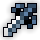
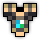
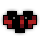
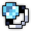
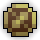

BiS Items & Swapouts:
Option 1:
  
Option 2:
 (any sword, most important is wisdom enchants)
-
-
-
(any sword, most important is wisdom enchants)
-
-
-
 or
or

Swapouts:
-

Usage of Swapouts:
is here in case you have a full vit rogue or a buckler knight, they benefit a lot from this:
→ → — always end on scholar seal, it has 5 second cooldown and the cooldown is shared between seals.
BiS Enchants:
- : Relative Wisdom IV - Wisdom Tradeoff IV - Onshoot Wisdom IV
-
 : Avalon's Intellect - Wisdom Tradeoff IV - Onshoot Wisdom IV
: Avalon's Intellect - Wisdom Tradeoff IV - Onshoot Wisdom IV
- : Relative Wisdom IV - Wisdom Tradeoff IV - Percent Mana Regen IV - Stat Mod Multiplier
- : Relative Wisdom IV - Wisdom Tradeoff IV - Onhit Wisdom IV
- : Relative Wisdom IV - Wisdom Tradeoff IV - Percent Mana Regen IV - Onhit/Onability Wisdom IV
-

 : Relative Wisdom IV - Wisdom Tradeoff IV - Percent Mana Regen IV - Onhit/Onability Wisdom IV
: Relative Wisdom IV - Wisdom Tradeoff IV - Percent Mana Regen IV - Onhit/Onability Wisdom IV
- : Necrotic Knowledge - Wisdom Tradeoff IV - Percent Mana Regen IV - Onhit/Onability Wisdom IV
For Wisdom Tradeoff enchants, avoid getting -dexterity or -attack, preferably no -mana either.